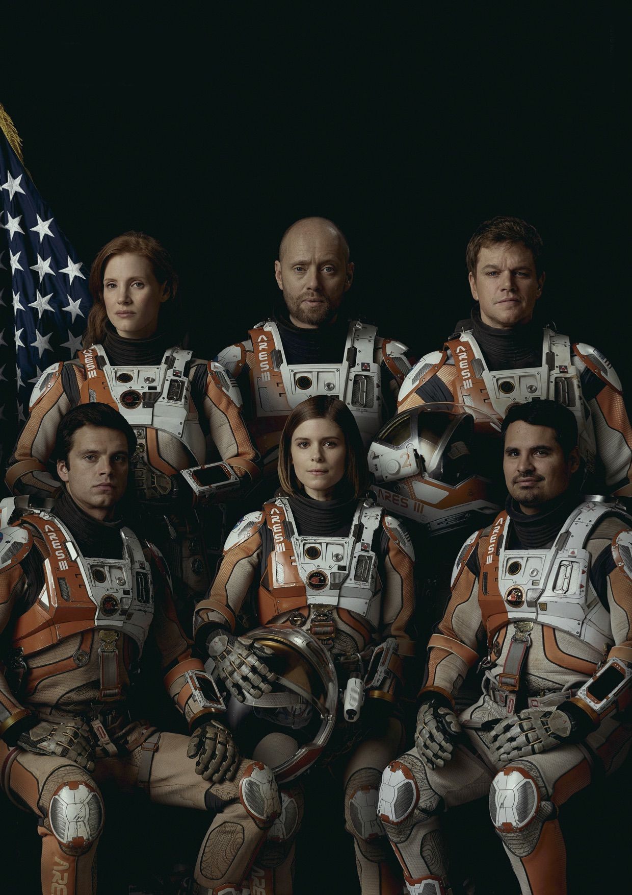

ARES III CREW
CDR. MELISSA LEWIS
Commander Melissa Lewis will be the first woman to lead a mission to Mars. She brings a diverse range of experience and achievement to the role of Mission Commander.
Lewis graduated with honors from the US Naval Academy with a degree in oceanography and would go on to serve as an officer in the revamped Submarine Arctic Science Program.
After her time in the Navy, Lewis began working on her PhD at CalTech's Division of Geological and Planetary Sciences. It's there that she connected with the Jet Propulsion Laboratory and was encouraged to join NASA.
Soon after, she found herself completing a series of in-space missions, including several trips to the SpaceX Station.
Recently, CDR Lewis spoke at a global technology conference hosted by UN Women and advocated for better access to STEM programs in developing nations and encouraged a new generation of women leaders across the world.
MJR. RICK MARTINEZ
Rick Martinez joins the Ares III mission to Mars as pilot after eleven decorated years of service in the United States Air Force.
Originally trained as a fighter pilot, Major Martinez eventually worked his way to the USAF Test Pilot School at Edwards Air Force Base where he made his mark as a top-notch pilot and continued to earn the respect and admiration of peers and commanders throughout his career.
By age fifteen, the Major knew that his ultimate goal was NASA. His first step towards making that dream come true was earning a bachelor of science in astronautical engineering at the United States
As he gets ready to embark on the mission of a lifetime, Martinez has the full support of his family and wishes that everyone will one day have the chance to visit space.
MARK WATNEY
Botanist Mark Watney spent eleven months working at NASA's Goddard Space Flight Center before being selected for the Ares III Mission.
A Chicago native, Watney attended the University of Chicago for his undegrad before moving on to Northwestern University where he earned a PhD in Plant Biology and Conservation with an emphasis in hydropedalogy and environmental engineering. While a graduate student, he had his first experience with NASA by becoming a research fellow with the Graduate Student Researchers Program (GSRP).
His work focused on hydrologic flow paths and sustainable water resources management within the Earth's Critical Zone. Mark then spent two years in the Peace Corps engineering sustainable agriculture and water irrigation systems for developing nations.
Upon returning, he applied to the NASA Astronaut Candidate Program and was selected for his outstanding academic accomplishments, dedication and service to community, and an exemplary record of professional achievement.
DR. CHRISTOPHER BECK
Dr. Chris Beck, flight surgeon for Ares III, graduated cum laude from the Yale School of Medicine. He was also a recipient of the Norma Bailey Berniker Prize, awarded to graduating students that best exemplify the disciplines and precepts of the Hippocratic Oath.
As a Captain in the United States Air Force Reserves, Dr. Beck completed extensive training in aerospace medicine. His record of accomplishment includes the Air Force Commendation Medal and the Meritorious Service Medal.
Since joining NASA, Chris Beck has made two trips to the SpaceX Station and completed five spacewalks (EVAs). He also furthered his training with a master's degree in biomedical sciences and has published numerous journal pieces in collaboration with the National Space Biomedical Research Institute. His research has focused on musculoskeletal alterations and the effects of deep space travel.
For the upcoming mission to Mars, he will serve as the crew's EVA specialist and biologist in addition to his flight surgeon duties.
ALEX VOGEL
Alex Vogel joins the Ares III crew through a partnership between NASA and the European Space Agency. A noted scientist and experienced astronaut, Vogel will serve as the navigator on the Hermes. He will become the first German to go to Mars.
He holds master's degrees in both chemistry and astrophysics from The University of Bonn as well as a doctorate in chemistry from the University of Tubingen.
For his doctorate, Vogel spent six months in Antarctica performing research in conjunction with the Alfred Wegener Institute for Polar and Marine Research in Bremerhaven, Germany. The study examined ancient ice samples and measured chemical traces of greenhouse gases in ice cores.
While in the field, he passed the time by volunteering to help with efforts to measure cosmic microwave background and has published dozens of papers in international journals.
A family man, Vogel hopes that one day his daughter can follow in his footsteps.
BETH JOHANSSEN
Beth Johanssen displayed a prodigious aptitude for technology at an early age. Graduating high school at just sixteen, she'd go on to win NASA's largest hackathon when she was seventeen before moving on to MIT for dual undergraduate degrees in math and computer science.
Johanssen started a private software company prior to starting graduate school at Stanford University. Drawn to Silicon Valley, she was intent on becoming a software engineer and CEO. However, during this time she would come into contact with SpaceX executive Brett Parker at a conference on advanced systems theory. Impressed by her work, Parker recruited Johanssen to help develop the software that would later become an integral part of the Hermes operating system. Her work on the project inspired her decision to switch paths and join NASA.
Fueled by her desire to make the trek to Mars, she was able to leverage her experience with the Hermes and secure a spot on the Ares III as its System Operator and Reactor Technician. Her knowledge and skill set make her an invaluable addition to the mission.
